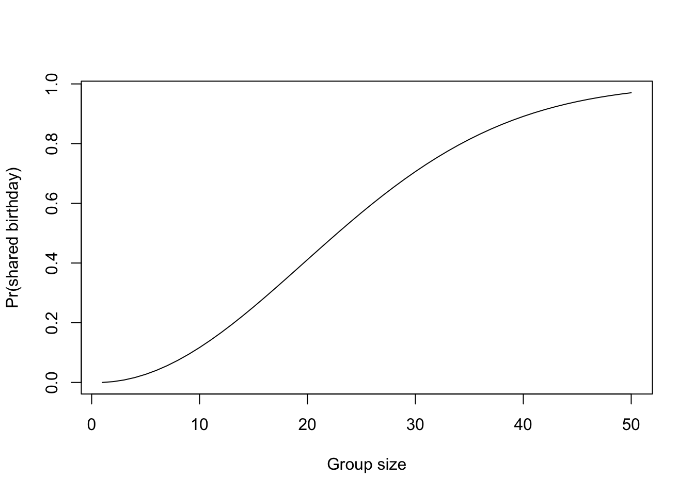

Counting rules
Finite sample spaces
Suppose \(S = \{s_1, \dots, s_n\}\) and \(\mathcal{S} = 2^S\). Let \(\{p_i\}\) be \(n\) numbers such that \(0 \leq p_i \leq 1\) and \(\sum_{i = 1}^n p_i = 1\). Then the set function
\[ P(E) = \sum_{i: x_i \in E} p_i \quad,\; E\in \mathcal{S} \]
is a probability measure on \((S, \mathcal{S})\), i.e., \((S, \mathcal{S}, P)\) is a probability space.
Proof
Since by construction \(\mathcal{S}\) is a \(\sigma\)-algebra, it remains only to check that \(P\) satisfies the probability axioms.
- Axiom 1: \(P(E) = \sum_{i: x_i \in E} p_i \geq 0\) since by hypothesis \(p_i \geq 0\).
- Axiom 2: \(P(S) = \sum_{i: x_i \in S} p_i = \sum_{i = 1}^n p_i = 1\).
- Axiom 3: let \(\{E_j\}\) be disjoint and define \(I_j = \{i: x_i \in E_j\}\). Note that \(\left\{i: x_i \in \bigcup_j E_j\right\} = \bigcup_j I_j\) and \(I_j \cap I_k = \emptyset\) for \(j \neq k\). Then: \[ P\left(\bigcup_j E_j\right) = \sum_{\bigcup_j I_j} p_i = \sum_j \sum_{I_j} p_i = \sum_j P(E_j) \]
So, probability measures on finite sample spaces are simply assignments of numbers in \([0, 1]\) to each outcome that sum to one.
Now, if one has equally likely outcomes in a finite sample space, i.e., \(p_i = p_j\), then: \[ P(E) = \sum_{i: x_i \in E} p_i = \sum_{i: x_i \in E} \frac{1}{|S|} = \frac{|E|}{|S|} \]
Thus, for finite probability spaces with equally likely outcomes, computing event probabilities is a matter of counting. While conceptually straightforward, it is often nontrivial to count the elements in a set. For example, how would you count the number of ways to draw a 3-of-a-kind in a 5-card poker hand? In other words, how many distinct combinations of 5 cards contain exactly three of matching rank and no other matches? For that matter, how many 5-card poker hands are possible? Once you know the answer, finding the probability of a 3-of-a-kind (or obtaining one by drawing 5 cards at random, anyway) is easy; counting the outcomes is the tricky part.
Counting principles
Multiplication rule (informally). In general, if a set of outcomes can be formed in \(k\) steps and there are \(n_1, \dots, n_k\) ways to complete each step, then there \(n_1 \times \cdots \times n_k\) outcomes.
The intuition behind this principle is that for each of the \(n_1\) ways of completing the first step, there are \(n_2\) ways to complete the second step, and hence, \(n_1 \times n_2\) total possibilities; then, for each of those possibilities, \(n_3\) ways to complete the third step, so \(n_1 \times n_2 \times n_3\) possibilities for completing the first three steps; and so on.
The term “step” is fairly loose, and need not correspond to a physical sequence of events. For example, one might represent that a playing card is specified in two steps by first selecting a suit, then a rank, even though, of course, one cannot physically choose a card in this way. “Steps” are just any systematic way of specifying outcome attributes; think of them like a recipe.
Example: choosing an outfit
Suppose you have a wardrobe of 30 tops, 20 bottoms, and 10 footwear options.
- How many outfits can you make?
- How many ways can you get dressed?
- If you choose an outfit at random, what is the probability of selecting each outfit?
- What about the probability of selecting an outfit with a specific top?
These can all be answered informally.
For each of the 30 tops, you can pick any of 20 bottoms, and thus there are 600 distinct combinations of tops and bottoms; for each of those, there are 10 footwear options, making for 6000 total combinations. In other words, the number of outfits is \(30 \times 20 \times 10 = 6000\).
Think of this as choosing an outfit and then choosing an order in which to put it on. No matter which outfit is chosen, there are 6 ways to put it on — 3 options for the first garment to put on; 2 options for the second garment, and 1 option for the last garment. So for each of the 6000 outfits, there are 6 orders: thus, 12,000 ways to get dressed. (No wonder it’s so hard to make up one’s mind sometimes.)
If outfits are chosen at random, then every outfit is equally likely, so the probability that each outfit is selected is \(\frac{1}{6000} \approx 0.00017\).
The number of outfits including a specific top is the number of combinations of 1 top with 20 bottoms with 10 footwear options, so there are \(1 \times 20\times 10 = 200\) such outfits; the probability of selecting one of these outfits at random is \(\frac{1}{30} \approx 0.033\). (Note that this is the same as the probability of selecting a given top at random.)
Notice that in (i), the same garments specified in a different order are not regarded as a distinct outfit — that is, the outcomes of interest are unordered. By contrast, in (ii), when the sequence that items are put on is considered, the outcomes of interest are ordered.
The mathematical principle in use in the outfit example is that the cardinality of a Cartesian product is the product of the cardinalities. This is articulated formally below. Throughout, assume that the elements of a set are distinct, i.e., that if we write \(A = \{a_1, \dots, a_n\}\), then \(a_i \neq a_j\) for \(i \neq j\). (It would be highly unconventional to list the elements of a set in a way that includes duplicates, since, e.g., \(\{0, 0, 1\} = \{0, 1\}\) according to our definition of set identity.)
Multiplication Rule 1. Let \(A = \{a_1, \dots, a_n\}\) and \(B = \{b_1, \dots, b_m\}\). The number of possible pairs \((a, b)\) that can be formed from the two sets is \(n \times m\).
Proof
More formally, let \(|A| = n\) and \(|B| = m\); the statement amounts to \(|A \times B| = |A| \times |B| = nm\). The elements of \(A\times B\) can be arranged in an \(n \times m\) array
\[ \begin{array}{ccccc} (a_1, b_1) &(a_1, b_2) &\cdots &(a_1, b_m) \\ (a_2, b_1) &(a_2, b_2) &\cdots &(a_2, b_m) \\ \vdots &\vdots &\ddots &\vdots \\ (a_n, b_1) &(a_n, b_2) &\cdots &(a_n, b_m) \\ \end{array} \] showing that there are \(n \times m\) distinct pairs.
Multiplication Rule 2. Let \(A_1, \dots, A_m\) be finite sets with \(|A_i| = n_i\). Then:
\[ |A_1 \times \cdots \times A_m| = |A_1| \times \cdots \times |A_m| = \prod_{i = 1}^m n_i \]
Proof
Apply multiplication rule 1 recursively. Define \(B_i = A_1 \times \cdots \times A_i\). Note that \(B_i = B_{i - 1} \times A_i\), so by multiplication rule 1, \(|B_i| = |B_{i - 1}|\times n_i\). Note also that \(|B_1| = |A_1| = n_1\). Then:
\[ \begin{align*} |A_1 \times \cdots \times A_m| &= |B_{m - 1} \times A_m| \\ &= |B_{m - 1}| \times n_m \\ &= |B_{m - 2}| \times n_{m - 1} \times n_m \\ &\;\;\vdots \\ &= |B_1| \times n_2 \times \cdots \times n_m \\ &= n_1 \times n_2 \times \cdots \times n_m \\ &= \prod_{i = 1}^m n_i \end{align*} \]
Check your understanding
If you’re buying nuts, apples, and cheese at the store and there are three kinds of nuts, four varieties of apples, and five cheeses, how many distinct purchases are possible if you only buy one kind of each item?
- Reason out an answer using the informal multiplication rule.
- Write the problem in terms of sets, and find the answer by multiplication rule 2.
Combinations, permutations, and more
Often a counting problem (or a step in a counting problem) involves forming combinations of \(k\) elements drawn from a finite set \(A = \{a_1, \dots, a_n\}\) with \(|A| = n\). The number of combinations depends on how they are formed: by drawing with or without replacement, and by accounting for or ignoring the order in which elements were drawn. Formally, these methods correspond to finding the cardinalities the following sets:
- (ordered, with replacement) \(\{(a_{j_1}, \dots, a_{j_k}): j_i \in \{1, \dots, n\}\}\)
- (ordered, without replacement) \(\{(a_{j_1}, \dots, a_{j_k}): j_i \in \{1, \dots, n\}; j_i \neq j_l \text{ for } i \neq l\}\)
- (unordered, with replacement) \(\{[a_{j_1}, \dots, a_{j_k}]: j_i \in \{1, \dots, n\}\}\)1
- (unordered, without replacement) \(\{\{a_{j_1}, \dots, a_{j_k}\}: j_i \in \{1, \dots, n\}; j_i \neq j_l \text{ for } i \neq l\}\)
In what follows, counting rules for each situation will be derived. The proofs rely in many instances on two facts: for disjoint sets \(A, B\), \(|A\cup B| = |A| + |B|\); and if \(A \subseteq B\), then \(|B\setminus A| = |B| - |A|\).
Sampling with replacement 1 (SWR1): ordered and with replacement. Let \(A\) be a set with \(|A| = n\). The number of ordered combinations of \(k\) elements drawn with replacement from \(A\) is \(n^k\).
Informally, apply the multiplication principle thinking of each draw as one ‘step’; since items are replaced after each draw, there are always \(n\) options at every step, so the number of possibilities is \(n \times \cdots \times n = n^k\). A more formal proof follows.
Proof
Enumerate the elements of \(A\) as \(A = \{a_1, \dots, a_n\}\). The ordered combinations of \(k\) elements of \(A\) drawn with replacement are the distinct \(k\)-tuples \((a_{j_1}, \dots, a_{j_k})\) where \(j_i \in \{1, \dots, n\}\) is some index. Note that possibly \(j_i = j_l\) according to this schema. Now, \(\{(a_{j_1}, \dots, a_{j_k}): j_i \in \{1, \dots, n\}\} = A^k\), so using multiplication rule 2:
\[ |A^k| = |A \times \cdots \times A| = |A| \times \cdots \times |A| = |A|^k = n^k \]
Sampling without replacement 1 (SWOR1): ordered and without replacement. Let \(A\) be a set with \(|A| = n\). The number of ordered combinations of \(k\) distinct elements drawn without replacement from \(A\) is:
\[ \frac{n!}{(n - k)!} = n \times (n - 1) \times \cdots \times (n - k + 1) \]
Using the informal multiplication rule considering each draw as a step, this result is fairly obvious: for the first draw there are \(n\) options, for the second, one option has been removed so there are \(n - 1\), for the third option, there are \(n - 2\), and so on, until the \(k\)th draw, at which point there are \(n - k + 1\) options. The proof below essentially formalizes this argument in terms of sets.
Proof
Let \(B_k = \{(a_{j_1}, \dots, a_{j_k}): j_i \in \{1, \dots, n\}; j_i \neq j_l \text{ for } i \neq l\}\). The goal is to show that \(|B_k| = \frac{n!}{(n - k)!}\) for arbitrary \(k\).
Enumerate the elements of \(B_k\) as \(B_k = \{b_{k1}, b_{k2}, \dots, b_{kn_k}\}\). For each element, \(b_{ki} = (b_{ki1}, \dots, b_{kik}) = (a_{j_{1_i}}, \dots, a_{j_{k_i}})\) for some collection of distinct indices \(j_{1_i}, \dots, j_{k_i}\). Note also that \(B_1 = A\). Now define:
\[ \begin{align*} \tilde{b}_{ki} &= \{b_{ki1}, \dots, b_{kik}\} \\ B_{ki} &= \{b \in B_k: b_k \in A \setminus \tilde{b}_{k - 1, i}, (b_1, \dots, b_k - 1) = b_{k - 1, i}\} \\ \end{align*} \]
In other words, \(\tilde{b}_{ki}\) is the set of elements of \(A\) included in the \(i\)th ordered combination of \(k\) elements; \(B_{ki}\) is the set of ordered combinations of \(k\) elements where the last element in the combination is not included in the \(i\)th ordered combination of \(k - 1\) elements. The indexing of ordered combinations is arbitrary.
Now, since \(b_{kij} \neq b_{kij'}\) for \(j \neq j'\), \(|\tilde{b}_{ki}| = k\). Note also that \(|B_{ki}| = |A| - |\tilde{b}_{k-1, i}| = n - (k - 1)\), \(\{B_{ki}\}\) is a mutually disjoint collection, and that \(B_k = \bigcup_i B_{ki}\). Then:
\[ |B_k| = \left| \bigcup_{i = 1}^{|B_{k - 1}|} B_{ki} \right| = \sum_{i = 1}^{|B_{k - 1}|} |B_{ki}| = \sum_{i = 1}^{|B_{k - 1}|} \left[ n - (k - 1)\right] = |B_{k - 1}| \left[ n - (k - 1)\right] \]
So by recursion: \[ \begin{align*} |B_k| &= |B_{k - 1}| \left[ n - (k - 1)\right] \\ &= |B_{k - 2}| \left[ n - (k - 2)\right] \left[ n - (k - 1)\right] \\ &\;\;\vdots \\ &= |B_1| \left[n - 1\right] \cdots \left[ n - (k - 2)\right] \left[ n - (k - 1)\right] \\ &= n (n - 1) \cdots (n - (k - 1)) \end{align*} \]
Example: the birthday problem
In a group of \(n < 365\) unrelated people, what is the probability that two or more share a birthday?
Suppose the individuals are numbered \(1, \dots, n\) and have birthdays \(b_1, \dots, b_n\). Represent the possible birthdays by the days of the year \(1, \dots, 365\). The sample space is the set of all possible collections of \(n\) birthdays: \[ S = \{(b_1, \dots, b_n): b_i \in \{1, \dots, 365\}\} = \{1, \dots, 365\}^n \]
Assuming that birthdays are allocated uniformly at random, each outcome is equally likely. Since it’s much easier to count the number of ways that all birthdays are different, consider the complementary event: \[ E = \{(b_1, \dots, b_n) \in S: b_i \neq b_j \text{ for } i \neq j\} \]
Since \(S\) is a set of ordered combinations of birthdays drawn with replacement, by SWR1 \(|S| = 365^n\). Since \(E\) is a set of ordered combinations of birthdays drawn without replacement, by SWOR1 \(|E| = \frac{365!}{(365 - n)!}\). So: \[ P(\text{at least two shared birthdays}) = 1 - P(E) = 1 - \frac{365!}{365^n (365 - n)!} \]
A plot of the probabilities is shown below.
Sampling without replacement 2 (SWOR2): unordered and without replacement. Let \(A\) be a set with \(|A| = n\). The number of unordered combinations of \(k\) distinct elements drawn without replacement from \(A\) is:
\[ \frac{n!}{k! (n - k)!} = \frac{n\cdot (n - 1)\cdot \cdots \cdot (n - k + 1)}{k \cdot (k - 1) \cdot \cdots \cdot 2 \cdot 1} \]
This result is also rather intuitive, given the SWOR1; for each unordered combination of elements drawn with replacement, by SWOR1 there are \(k!\) possible ways to order the combination (form ordered combination of \(k\) elements from \(k\) options without replacement). One can then regard the number of ordered combinations as the result of choosing a combination and then choosing an order. So, by the multiplication rule, \((\#\text{ordered combinations}) = k! \times (\#\text{unordered combinations})\). The proof formalizes this argument.
Proof
Let \(B_k\) be the set of all ordered combinations of \(k\) distinct elements drawn without replacement from \(A\) (as in the proof of SWOR1) and consider: \[ C_k = \{ \{a_{j_1}, \dots, a_{j_k}\} \subseteq A: j_i \neq j_{i'} \text{ for } i \neq i'\} \quad\text{(all subsets of size $k$)} \]
The goal is to show that \(|C_k| = \frac{n!}{k! (n - k)!}\). For each set \(C_{kj} \in C_k\), denote the set of ordered combinations formed from elements of \(C_{kj}\) by \(B_{kj} = \{(a_{j_1}, \dots, a_{j_k}): a_{j_i} \in C_k\}\).
Note that by construction, \(\{B_{kj}\}\) is a partition of \(B_k\). Further, \(|C_{kj} = k|\), so by SWOR1 we have that \(|B_{kj}| = \frac{k!}{(k - k)!} = k!\), and then:
\[ |B_k| = \left| \bigcup_{j = 1}^{|C_k|} B_{kj} \right| = \sum_{j = 1}^{|C_k|} |B_{kj}| = \sum_{j = 1}^{|C_k|} k! = |C_k| k! \]
It follows that:
\[ |C_k| = \frac{|B_k|}{k!} = \frac{n!}{k! (n - k)!} \]
The types of combinations resulting from sampling without replacement have special names: ordered combinations of distinct elements drawn without replacement are known as permutations; and unordered combinations are known as combinations. It is common to denote the corresponding counting rules with special notation:
- (permutations) \(P^n_k\) or \(P_{n, k}\) for \(\frac{n!}{(n - k)!}\)
- (combinations) \(C^n_k\) or \(C_{n, k}\) for \(\frac{n!}{k! (n - k)!}\)
These won’t be used in this class, but it’s useful to be aware of the notation, as many books use them. We will, however, adopt the notation \({n \choose k}\) for unordered combinations of elements drawn with replacement; this is read “\(n\) choose \(k\)”, because the counting rule gives the number of ways to choose \(k\) items from among \(n\) possibilities.
Example: poker hands
A typical poker hand is 5 playing cards drawn without replacement from a standard 52-card deck. The number of possible hands is the number of unordered combinations, because the same 5 cards drawn in any order yields the same hand. Thus the number of possible hands is:
\[ \#\text{hands} = {52\choose 5} = \frac{52!}{5!47!} = 2,598,960 \]
A 3-of-a-kind is a hand in which the rank of three cards matches, and the rank of the remaining two cards does not. How many distinct three-of-a-kind hands are there?
The hand can be obtained in the following “steps”: (i) choose a rank for the three matching cards; (ii) choose the suits of the three matching cards; (iii) choose the ranks of the non-matching pair; (iv) choose the suits of the non-matching pair. Each “choice” amounts to an unordered combination drawn without replacement, because the same card can’t be selected twice and selecting the same cards in any order produces to the same hand. The ways to accomplish each step are as follows:
- Choose 1 rank from 13 possibilities (A, 2, 3, …, 10, J, Q, K)
- Choose 3 suits from 4 possibilities (hears, spades, clubs, diamonds)
- Choose 2 ranks from 12 possibilities (13 ranks less the rank selected for the matching pair)
- Choose 1 suit from 4 possibilities
- Choose 1 suit from 4 possibilities.
Thus: \[ \begin{align*} \#\text{ 3-of-a-kind hands} &= {13\choose 1}\times {4\choose 3}\times {12\choose 2}\times {4\choose 1}\times {4\choose 1} \\ &= 13\times 4 \times 66 \times 4 \times 4 \\ &= 54912 \end{align*} \]
If a hand is drawn at random, the probability of a 3-of-a-kind is \(\frac{54912}{{52 \choose 5}} = \frac{54912}{2598960} \approx 0.0211\).
Sampling with replacement 2 (SWR2): unordered and with replacement. Let \(A\) be a set with \(|A| = n\). The number of unordered combinations of \(k\) (possibly nondistinct) elements drawn with replacement from \(A\) is \({n + k - 1 \choose k}\).
Proof
The goal is to find \(|D_k|\) where \(D_k = \{D_{kj} = [a_{j_1}, \dots, a_{j_k}]: j_i \in \{1, \dots, n\}\}\). Define:
\[ x_{ij} = \# \text{ of times } a_i \text{ is included in } D_{kj} \]
Then \(\sum_{i = 1}^n x_{ij} = |D_{kj}| = k\) by construction. Denote by \(x_j\) the vector \((x_{1j}, x_{2j}, \dots, x_{nj})\). Note that \(D_{kj} = D_{kj'}\) just in case \(x_j = x_{j'}\), and in fact there is a one-to-one correspondence between the elements of \(D_k\) and the set \(V = \{x \in \{0, 1, \dots, k\}^n: \sum_{i = 1}^n x_i = k \}\). Thus, \(|D_k| = |V|\).
Consider the encoding of \(\sum_i x_{ij}\) for an arbitrary \(x_j \in V\) that results from expanding the sum and replacing integers by the corresponding number of vertical bars, for instance:
\[ \begin{align*} \sum_{i = 1}^n x_{ij} &= 1 + 2 + 0 + 0 + 0 + 0 + 1 + \dots + 3 + 0 + 1 + 0 + 0 \\ &= | + || + + + + | + \cdots + ||| + + | + + \end{align*} \] Now, each unique \(x_j\) will correspond to a distinct encoding sequence of \(|\) and \(+\), and conversely each unique encoding sequence corresponds to exactly one \(x_j\). Further, there are precisely \(k\) bars and \(n - 1\) plus signs, so each encoding string comprises \(k + n - 1\) characters. The unique encoding sequences result from the distinct allocations of bars to positions in the encoding string. In other words, there are exactly as many encoding sequences as there are ways to place the \(k\) bars among the \(k + n - 1\) positions. Thus:
\[ |D_k| = |V| = \text{\# of ways to allocate $k$ bars to $n + k - 1$ positions} = {n + k - 1 \choose k} \]
Example: clown cars
Suppose 50 clowns are organizing a three-car caravan. They have a polka dot car, a striped car, and a swirl car. They are trying to decide how many clowns should go in each car. How many options are there?
Each arrangement is a grouping of the clowns into three groups — polka dot, stripes, swirls — so this can be thought of as sampling from the cars with replacement. The number of groupings is therefore: \[ {3 + 50 - 1 \choose 50} = {52\choose 50} = \frac{52\cdot 51}{2} = 1326 \] What about the number of configurations in which the polka dot car has at least 10 clowns? This can be done by assigning 10 clowns to the polka dot car and then allocating the remaining 40 clowns among the three cars, so the number of configurations is simply the number of ways to allocate 40 clowns to 3 cars: \[ {3 + 40 - 1 \choose 40} = {42\choose 40} = \frac{42\cdot 41}{2} = 861 \] What about the number of configurations in which the polka dot car has exactly 10 clowns? That amounts to allocating the remaining 40 clowns among only two cars: \[ {2 + 40 - 1 \choose 40} = {41\choose 40} = 41 \] Check your understanding:
- What if each car must have at least one clown to drive and one to navigate?
- What is the probability that all cars have at least 10 clowns?
The table below summarizes the four counting rules.
| Drawn with replacement | Drawn without replacement | |
|---|---|---|
| Unordered | \[ {n + k - 1 \choose k} \] | \[ {n \choose k} \] |
| Ordered | \[ n^k \] | \[ \frac{n!}{(n - k)!} \] |
The most commonly used rules are those pertaining to draws without replacement in the rightmost column, i.e.,combinations (top) and permutations (bottom).
Footnotes
The notation \([x_1, \dots, x_n]\) is an ad-hoc expression for the unordered collection consisting of \(x_1, \dots, x_n\) possibly non-distinct elements. Some special notation is needed here because when the collection includes duplicates, it cannot be written as a set. For instance, \(\{0, 0, 1\} = \{0, 1\}\) but \([0, 0, 1] \neq [0, 1]\).↩︎